Suppose that we are given a (time-invariant) control system
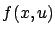
must be tangent to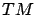
. When we worked over
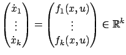
and the difference between states and tangent vectors becomes ``hidden" once again.
Let us assume for simplicity that an optimal control problem is formulated in the Mayer form (i.e., with terminal cost only). We know that problems with running cost can always be converted to this form by appending an additional state
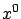
, which would yield a system on the augmented manifold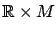
(cf. Sections 3.3.2 and 4.2.1). The basic ingredients of the maximum principle are the costate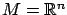
, the Hamiltonian for the Mayer problem took the form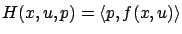
. For a general manifold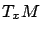
--called a Riemannian metric on
Can we perhaps take a more direct guidance from the fact that in our old definition of the Hamiltonian,  appears in an inner product with the velocity vector
? In fact, we already remarked in Section 3.4.2 that
appears in an inner product with the velocity vector
? In fact, we already remarked in Section 3.4.2 that  never appears by itself but always inside inner products such as
never appears by itself but always inside inner products such as
 ; in other words, it
acts on velocity vectors. This observation suggests that the intrinsic role of the costate
; in other words, it
acts on velocity vectors. This observation suggests that the intrinsic role of the costate  is not that of a tangent vector,
but that of a covector. To better understand the difference between these two types of objects and why the latter one correctly captures the notion of a costate, let us look at how they propagate along a flow induced by a dynamical system on
is not that of a tangent vector,
but that of a covector. To better understand the difference between these two types of objects and why the latter one correctly captures the notion of a costate, let us look at how they propagate along a flow induced by a dynamical system on  .
.
Fix a number  and let
and let
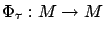
be a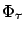
induces on tangent vectors. Pick a point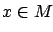
and a tangent vector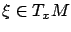
. We know that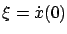
where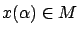
for real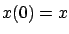
. The image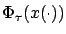
of this curve under the map is a curve in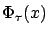
, as illustrated in Figure 7.1. Denote the tangent vector at associated with this new curve by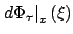
; in other words, define
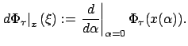
The above quantity depends only on the vector
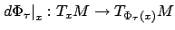
called the derivative (or differential) of at
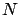
can be considered, and we already discussed the case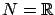
in Section 7.1.1. In fact, in the proof of the maximum principle we performed a closely related computation, showing that an infinitesimal state perturbation
Now suppose that we are given a covector at  , i.e., a
linear function on
. Let us denote it by
, i.e., a
linear function on
. Let us denote it by
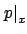
so as to have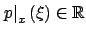
for each . For the same map as before, can we define in a natural way a linear function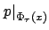
on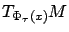
? We must decide what the value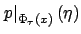
should be for every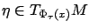
. While it is tempting to say that should equal the value of on the preimage of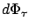
acts on tangent vectors. The reason is that, instead of trying to push covectors forward, we should pull them back. This revised objective is readily accomplished as follows: given a covector on , define a covector on by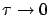
) transformation induced by the derivative map is the variational equation (7.3). We can now recognize the formula (7.4) as expressing--in an intrinsic, coordinate-free fashion--the adjoint property from Section 4.2.8; indeed, it guarantees that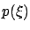
stays constant along the trajectory. The familiar adjoint equation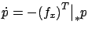
is nothing but the infinitesimal version of (7.4) written in local coordinates. A fact not really revealed by this differential equation is that covectors are covariant objects, in the sense that they propagate backward along a flow on
Now everything is beginning to fall into place. The Hamiltonian for our Mayer problem on a manifold  should be defined as
should be defined as
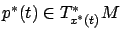
for each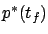
uniquely specifies